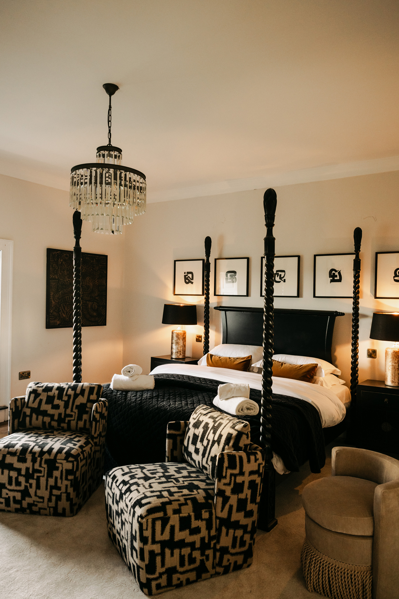
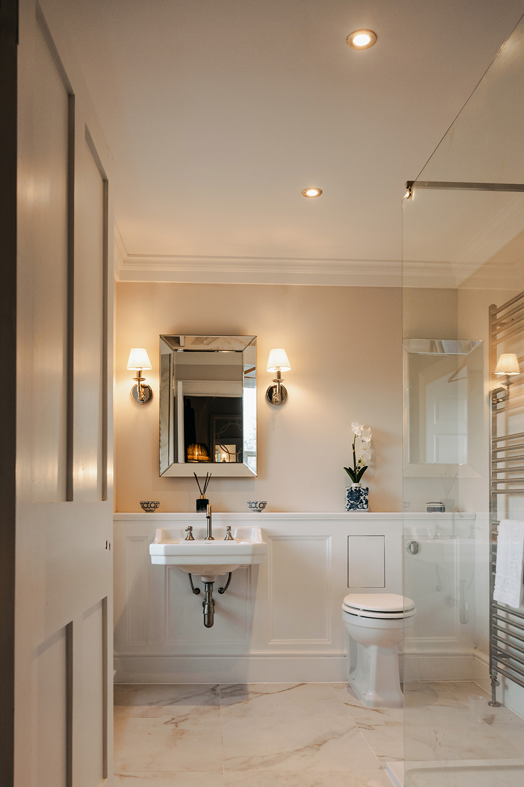
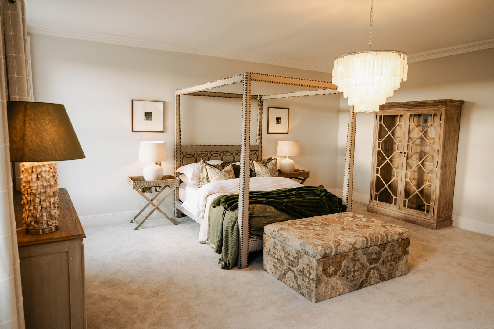
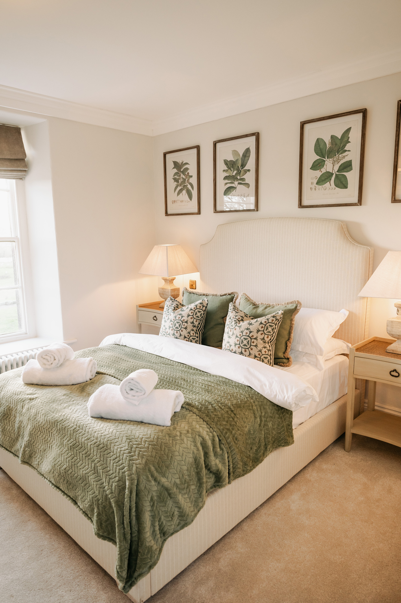
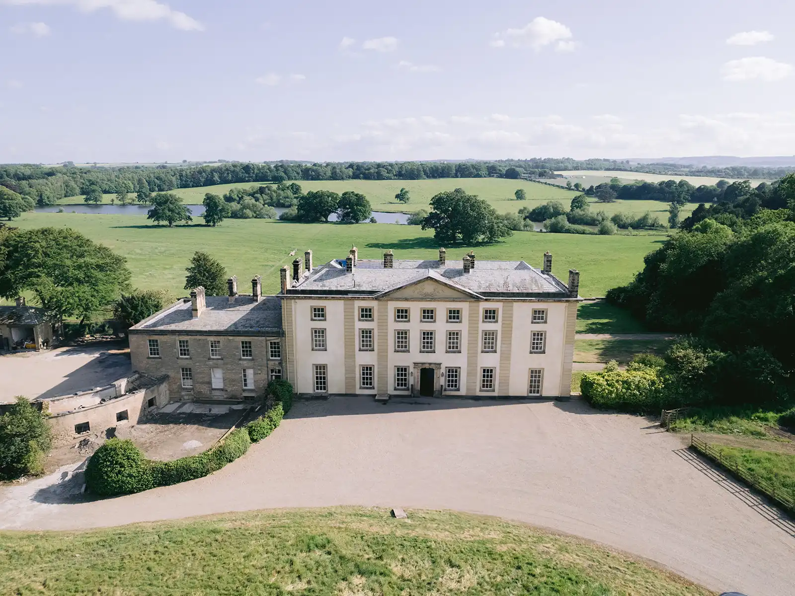
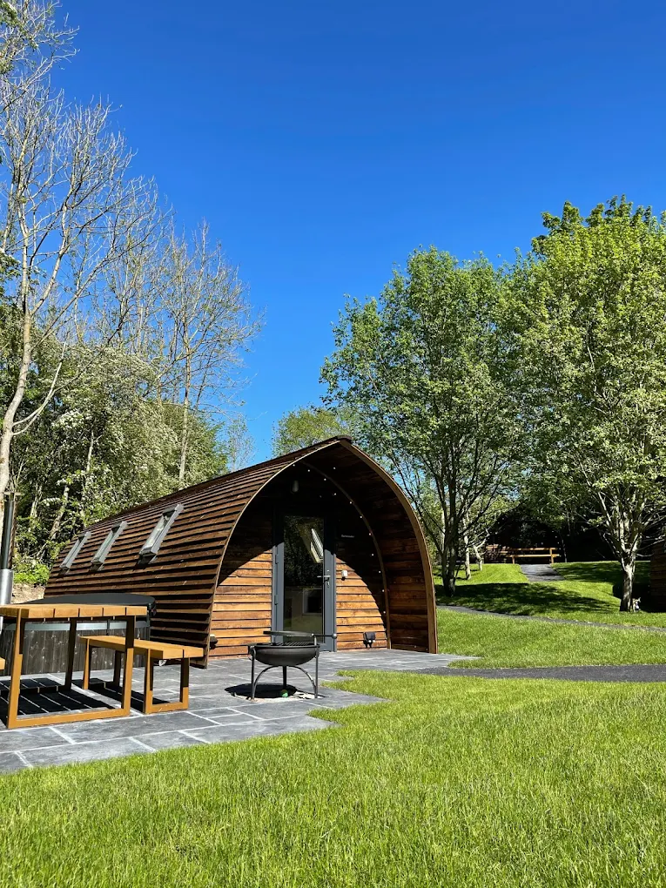
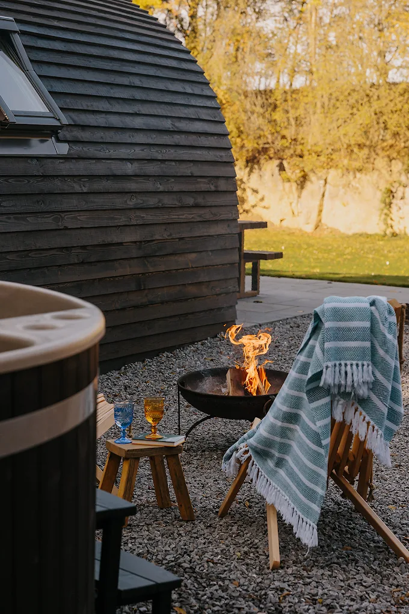
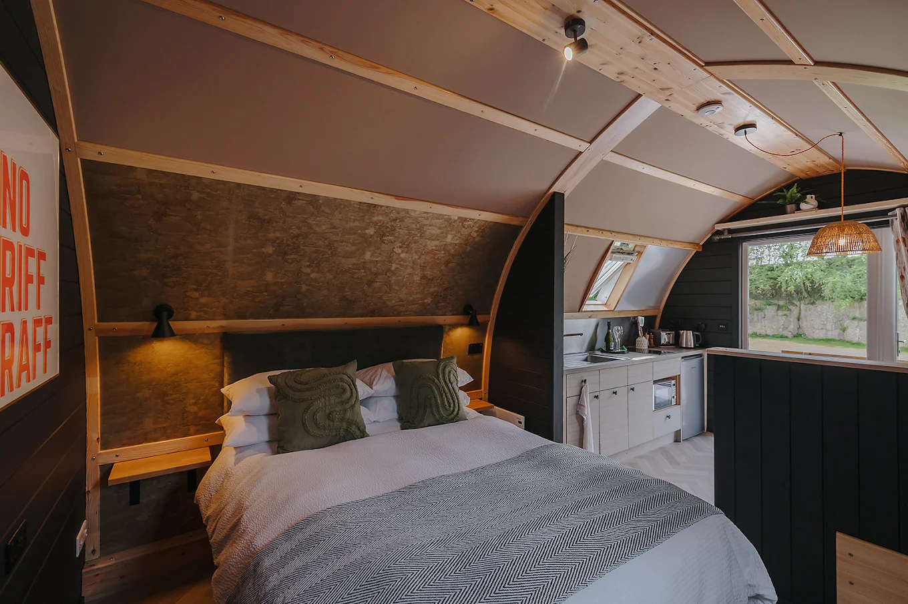
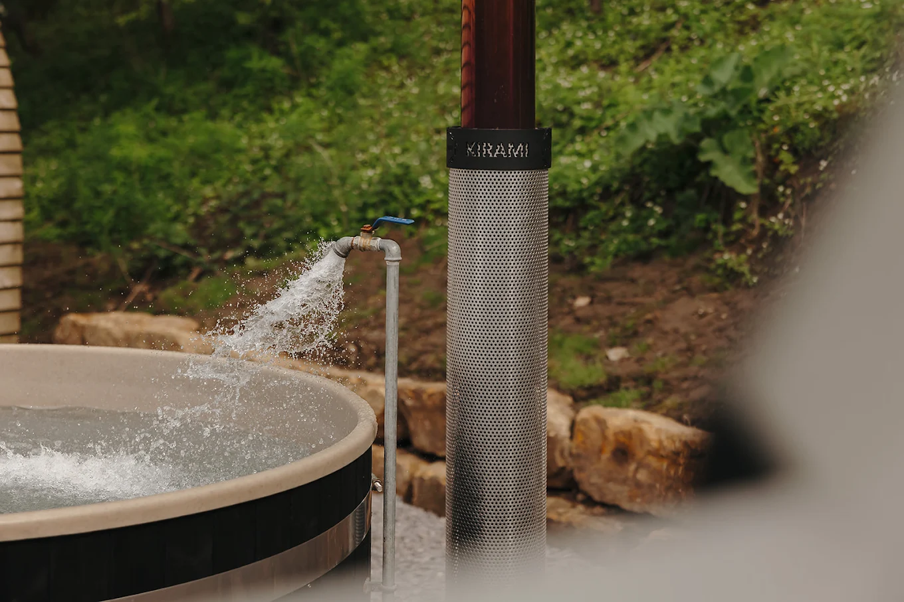
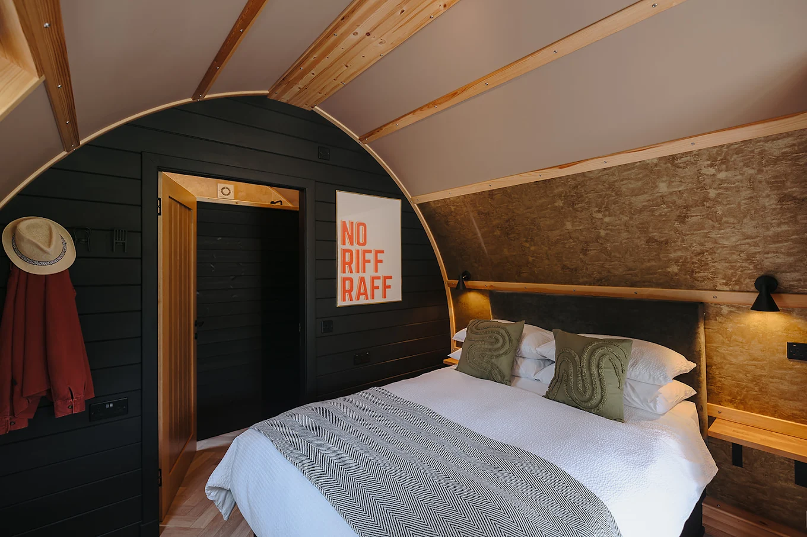

Accommodation
Our guests are to be hosted at either Forcett Hall or Hewn Yorkshire.
Forcett Hall
Forcett Hall has a total of 22 bedrooms spread across the site with 17 in the main building and 5 between the north and south gatehouses. There are 4 rooms where additional single beds, either z-beds or sofa beds, can be added. This gives availability for a total of 50 guests at the hall.
There is a large kitchen at the hall, and we urge our guests to feel at home for the weekend and so are welcome to use this for teas and coffees as you please.





Hewn Yorkshire
Hewn Yorkshire is a luxury lodge camping getaway with 12 lodges located just south of hall, just 1.7 miles away by road. Transport will be provided between Hewn and the Church/Hall on Friday and Saturday.
Each lodge will have a teas, coffees, and breakfast supplied. Outside every lodge is a wood-fired hot tub, so remember to bring a swimming costume if you are staying here.





Cost
The total costs for a double room over the weekend (Friday night and Saturday night)
ߦ £500 Forcett Hall
ߦ £338 Hewn Yorkshire
The cost per additional single bed at Forcett Hall
ߦ £90
Addresses
Forcett Hall
Forcett
Richmond
DL11 7SB
Hewn Yorkshire
Forcett Grange
Richmond
DL11 7SQ
By Rail
Darlington railway station is a 20 minute car journey away and has direct trains from London.
By Road
Travel can be made via the A1 with Scotch Corner only 10 minutes away.